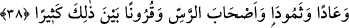

38. Âd’ı, Semûd’u, Ress halkını ve bunlar arasında daha birçok nesilleri de
(inkârcılıklarından ötürü helâk ettik).
“Âd’ı,” Hûd (a.s.)’ı yalanlayan Âd kavmini “Semûd’u,” Sâlih (a.s.)’ı yalanlayan
Semûd kavmini “Ress halkını” helâk ettik.
“, kuyu demektir. Etrafı taş ve tuğlayla örülmemiş her kuyuya “ denir.
Nitekim el-Keşşâf’ta “ etrafı örülüp yapılmamış kuyudur” der. es-Sıhâh’ta olduğu
gibi el-Kâmûs’ta da “in etrafı örülmüş kuyu olduğu zikredilmiştir.
Ress halkı putperest bir topluluktu. Allah Teâlâ onlara Şuayb (a.s.)’ı peygamber
olarak gönderdi. Fakat onlar Şuayb (a.s.)’ı yalanladılar. Su içtikleri ve hayvanlarını
suladıkları etrafı çevrilmemiş kuyularının başında dururlarken kuyu çöktü.
Memleketleri, hayvanları ve mallarıyla birlikte yerin dibine batırdı, böylece hepsi helâk
oldular.
el-Kâmûs’ta der ki: “Ress, Semûd kavminden geri kalan kimselere âid bir kuyu idi.
Onlar peygamberlerini yalanladılar ve bir kuyunun içine koyup gizlediler.”
Peygamberlerine yaptıkları bu muâmele sebebiyle kendilerine ‘ashâbu’r-ress’ denildi.
Ress masdardır. Peygamberleri ise Hanzala b. Safvân idi. İbn Kesîr’in zikrettiğine göre
o, Mûsa (a.s.)’dan önce gönderilmiş bir peygamberdi.
Ress halkı peygamberlerini kuyuya atıp gizlediklerinde kuyunun suyu çekildi ve
kurudu. Suya doyduktan sonra susuz kaldılar. Ağaçları kurudu ve meyve vermez oldu.
Halbuki daha önce kuyunun suyu bütün arazilerini sulamaya yetiyor ve susuzluk
çekmiyorlardı. Bir arada yaşarken yalnızlığa mahkum oldular, yek vücut iken ayrılığa
düştüler. Çünkü onlar putlara tapanlardandılar. Allah Teâlâ onlara büyük, uzun boyunlu,
rengârenk bir kuşu musallat etti. Avlanmak istediğinde onların çocuklarına saldırır ve
kapıp götürürdü. Onlardan birini kaptığında batı tarafına götürürdü. Boynunun uzunluğu
ve batıya doğru gitmesi sebebiyle ona ‘Anka-i Muğrib’ yâni batıran, yok eden anka
denilmiştir.
Kâşifî der ki: “Peygamber şöyle duâ etti: “Ey Rabbim! Bu kuşu al ve neslini yok et.”
Peygamberin duâsı kabul oldu, o kuş yok oldu. Artık adı dışında ondan bir haber ve bir
iz kalmadı. Bulunmayan şeyler için o darbımesel olarak söylenir.”
Mürüvvet kalktı, vefâ da yok oldu
“Anka” ve “kimya” gibi ikisinden sadece bir ad kaldı
Lemeât müellifi, bunun gibi aşktan iz ve eser kalmadığını şöyle ifâde eder:
Âşıkım ben, iki âlemde de yerim belli değil
Mağrib Ankasıyım, nişânım mevcut değil